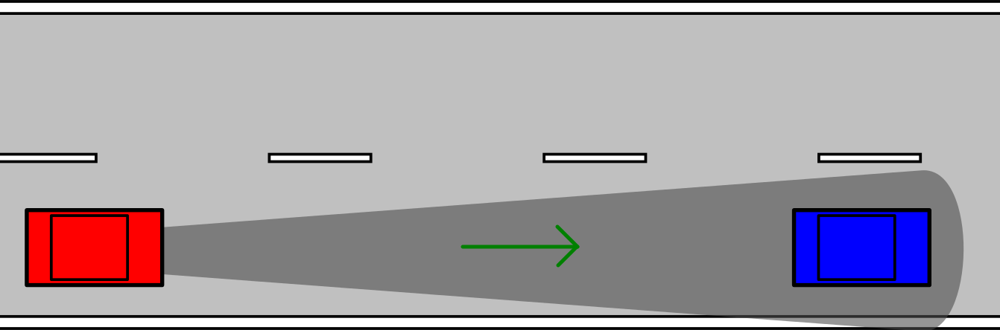

Adaptive Cruise Control (ACC)
The Adaptive Cruise Control (ACC) benchmark models a car that drives at a set velocity and maintains a safe distance from a lead car by adjusting the longitudinal acceleration [TCL+19].

using ClosedLoopReachability
import OrdinaryDiffEq, Plots, DisplayAs
using ReachabilityBase.CurrentPath: @current_path
using ReachabilityBase.Timing: print_timed
using ClosedLoopReachability: FunctionPreprocessing
using Plots: plot, plot!Model
The cars' dynamics are modeled as follows:
\[\begin{aligned} \dot{x}_{lead} &= v_{lead} \\ \dot{v}_{lead} &= γ_{lead} \\ \dot{γ}_{lead} &= -2 γ_{lead} + 2 a_{lead} - u v_{lead}^2 \\ \dot{x}_{ego} &= v_{ego} \\ \dot{v}_{ego} &= γ_{ego} \\ \dot{γ}_{ego} &= -2 γ_{ego} + 2 a_{ego} - u v_{ego}^2 \end{aligned}\]
where $u = 0.0001$ is the friction parameter, and for each car $i ∈ \{ego, lead\}$ we have that $x_i$ is the position, $v_i$ is the velocity, $γ_i$ is the acceleration, and $a_i$ is the control input for the acceleration.
vars_idx = Dict(:states => 1:6, :controls => 7)
const u = 0.0001
const a_lead = -2.0
@taylorize function ACC!(dx, x, p, t)
v_lead = x[2] # lead car velocity
γ_lead = x[3] # lead car acceleration
v_ego = x[5] # ego car velocity
γ_ego = x[6] # ego car acceleration
a_ego = x[7] # ego car acceleration control input
# Lead-car dynamics:
dx[1] = v_lead
dx[2] = γ_lead
dx[3] = 2 * (a_lead - γ_lead) - u * v_lead^2
# Ego-car dynamics:
dx[4] = v_ego
dx[5] = γ_ego
dx[6] = 2 * (a_ego - γ_ego) - u * v_ego^2
dx[7] = zero(a_ego)
return dx
end;We are given two neural-network controllers with 5 hidden layers of 20 neurons each. One controller uses ReLU activations and the other controller uses tanh activations. Both controllers have 5 inputs $(v_{set}, T_{gap}, v_{ego}, D_{rel}, v_{rel})$ and one output ($a_{ego}$), where $v_{set} = 30$ is the ego car's set velocity, $T_{gap} = 1.4$, $D_{rel} = x_{lead} - x_{ego}$ is the distance between the cars, and $v_{rel} = v_{lead} - v_{ego}$ is the distance between the velocities.
path = @current_path("ACC", "ACC_controller_relu.polar")
controller_relu = read_POLAR(path)
path = @current_path("ACC", "ACC_controller_tanh.polar")
controller_tanh = read_POLAR(path);The controller input is $(v_{set}, T_{gap}, v_{ego}, D_{rel}, v_{rel})$, for which we define a transformation matrix $M$.
v_set = 30.0
T_gap = 1.4
M = zeros(3, 6)
M[1, 5] = 1.0
M[2, 1] = 1.0
M[2, 4] = -1.0
M[3, 2] = 1.0
M[3, 5] = -1.0
function preprocess(X::LazySet) # version for set computations
Y1 = Singleton([v_set, T_gap])
Y2 = linear_map(M, X)
return cartesian_product(Y1, Y2)
end
function preprocess(X::AbstractVector) # version for simulations
Y1 = [v_set, T_gap]
Y2 = M * X
return vcat(Y1, Y2)
end
control_preprocessing = FunctionPreprocessing(preprocess);The control period is 0.1 time units.
period = 0.1;Specification
The uncertain initial condition is:
\[\begin{aligned} x_{lead} &∈ [90, 110],& v_{lead} &∈ [32, 32.2],& γ_{lead} &= 0, \\ x_{ego} &∈ [10, 11],& v_{ego} &∈ [30, 30.2],& γ_{ego} &= 0 \end{aligned}\]
X₀ = Hyperrectangle(low=[90, 32, 0, 10, 30, 0],
high=[110, 32.2, 0, 11, 30.2, 0])
U₀ = ZeroSet(1);The control problem (parametric in the controller) is:
ivp = @ivp(x' = ACC!(x), dim: 7, x(0) ∈ X₀ × U₀)
problem(controller) = ControlledPlant(ivp, controller, vars_idx, period;
preprocessing=control_preprocessing);We consider a scenario where both cars are driving safely and the lead car suddenly slows down with $a_{lead} = -2$. We want to verify that there is no collision in the following 5 time units, i.e., the ego car must maintain a safe distance $D_{safe}$ from the lead car. Formally, the safety specification is $D_{rel} ≥ D_{safe}$, where $D_{safe} = D_{default} + T_{gap} · v_{ego}$ and $D_{default} = 10$. After substitution, the specification reduces to $x_{lead} - x_{ego} - T_{gap} · v_{ego} ≥ D_{default}$. A sufficient condition for guaranteed verification is to overapproximate the result with hyperrectangles.
D_default = 10.0
d_rel = [1.0, 0, 0, -1, 0, 0, 0]
d_safe = [0, 0, 0, 0, T_gap, 0, 0]
d_prop = d_rel - d_safe
safe_states = HalfSpace(-d_prop, -D_default)
predicate(sol) = overapproximate(sol, Hyperrectangle) ⊆ safe_states
T = 5.0
T_warmup = 2 * period; # shorter time horizon for warm-up runAnalysis
To enclose the continuous dynamics, we use a Taylor-model-based algorithm:
algorithm_plant = TMJets(abstol=1e-3, orderT=5, orderQ=1);To propagate sets through the neural network, we use the DeepZ algorithm:
algorithm_controller = DeepZ();The verification benchmark is given below:
function benchmark(prob; T=T, silent::Bool=false)
# Solve the controlled system:
silent || println("Flowpipe construction:")
res = @timed solve(prob; T=T, algorithm_controller=algorithm_controller,
algorithm_plant=algorithm_plant)
sol = res.value
silent || print_timed(res)
# Check the property:
silent || println("Property checking:")
res = @timed predicate(sol)
silent || print_timed(res)
if res.value
silent || println(" The property is satisfied.")
result = "verified"
else
silent || println(" The property may be violated.")
result = "not verified"
end
return sol, result
end;For each controller we execute the same analysis script, which runs the verification benchmark and computes simulations:
function run(; use_relu_controller::Bool)
if use_relu_controller
println("# Running analysis with ReLU controller")
prob = problem(controller_relu)
else
println("# Running analysis with tanh controller")
prob = problem(controller_tanh)
end
# Run the verification benchmark:
benchmark(prob; T=T_warmup, silent=true) # warm-up
res = @timed benchmark(prob; T=T) # benchmark
sol, result = res.value
@assert (result == "verified") "verification failed"
println("Total analysis time:")
print_timed(res)
# Compute some simulations:
println("Simulation:")
res = @timed simulate(prob; T=T, trajectories=10, include_vertices=true)
sim = res.value
print_timed(res)
return sol, sim
end;Run the analysis script for the ReLU controller:
sol_relu, sim_relu = run(use_relu_controller=true);# Running analysis with ReLU controller
Flowpipe construction:
0.403891 seconds (7.02 M allocations: 363.974 MiB, 18.02% gc time)
Property checking:
0.028508 seconds (589.21 k allocations: 26.572 MiB)
The property is satisfied.
Total analysis time:
0.524307 seconds (7.67 M allocations: 394.097 MiB, 13.88% gc time, 0.00% compilation time)
Simulation:
4.762561 seconds (10.13 M allocations: 538.461 MiB, 2.31% gc time, 0.00% compilation time)Run the analysis script for the tanh controller:
sol_tanh, sim_tanh = run(use_relu_controller=false);# Running analysis with tanh controller
Flowpipe construction:
0.809540 seconds (7.04 M allocations: 366.963 MiB, 54.84% gc time)
Property checking:
0.028201 seconds (589.21 k allocations: 26.572 MiB)
The property is satisfied.
Total analysis time:
0.837992 seconds (7.63 M allocations: 394.044 MiB, 52.98% gc time)
Simulation:
0.066182 seconds (334.48 k allocations: 21.552 MiB, 0.00% compilation time)Results
Script to plot the results:
function plot_helper(sol, sim)
fig = plot(leg=(0.4, 0.3))
for F in sol, R in F
# Subdivide the reach sets in time to obtain more precise plots:
R = overapproximate(R, Zonotope; ntdiv=5)
R_rel = linear_map(Matrix(d_rel'), R)
plot!(fig, R_rel; vars=(0, 1), c=:red, lw=0, alpha=0.4)
end
solz = overapproximate(flowpipe(sol), Zonotope)
fp_safe = affine_map(Matrix(d_safe'), solz, [D_default])
plot!(fig, fp_safe; vars=(0, 1), c=:blue, lw=0, alpha=0.4)
output_map_rel = x -> dot(d_rel, x)
plot_simulation!(fig, sim; output_map=output_map_rel, color=:red, lab="Drel")
output_map_safe = x -> dot(d_safe, x) + D_default
plot_simulation!(fig, sim; output_map=output_map_safe, color=:blue, lab="Dsafe")
plot!(fig; xlab="time")
return fig
end;Plot the results:
fig = plot_helper(sol_relu, sim_relu)
# Plots.savefig(fig, "ACC-ReLU.png") # command to save the plot to a file
fig = DisplayAs.Text(DisplayAs.PNG(fig))fig = plot_helper(sol_tanh, sim_tanh)
fig = DisplayAs.Text(DisplayAs.PNG(fig))
# savefig(fig, "ACC-tanh.png") # command to save the plot to a file